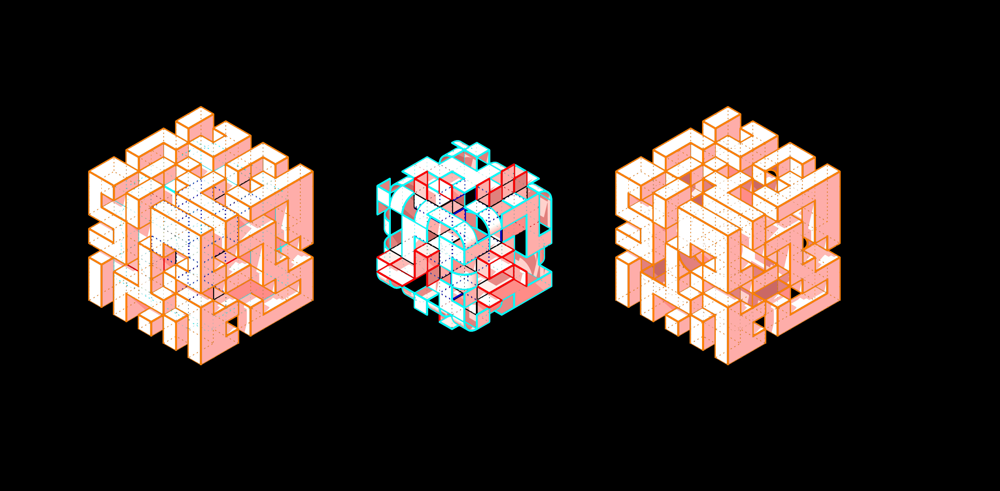

the blueprint of first-person character part1
the blueprint of first-person character part1
 the blueprint of first-person character part2
the blueprint of first-person character part2

3D maze with paths on the 6 different faces of a cube
This is game created using Unreal Engine 4. It is based on the setting of a intricate 3D maze. The goal for the player is to pass all the obstacles and traps in order to find and reach the preset destination point. There is a time limit for the player indicated by a “health bar” on the upper left corner of the interface. The player can also collect crystals to increase his health (i.e. prolong the remaining time).
The user must be able to walk on the 6 different faces of the cube without falling because of the gravity. To achieve this, we used a plug-in of Unreal Engine called “Adventure Kit”. We also modified the blueprints of the one-person character.
the blueprint of first-person character part1
the blueprint of first-person character part2
In order to create some challenges for the players:
There are three basic parts of the architecture model: the wall as obstacles, the walk-able paths on the floor, the indented traps which will “kill” the player if they fall in. While the reflective texture are applied to the walk-able floors, the walls have an emissive texture which gradually changes colors within a gradient. Global illumination was used to avoid the dark shadows on any of the 6 faces of the cube.